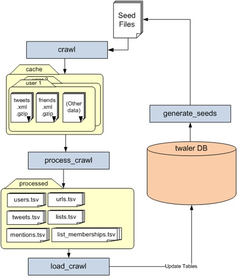
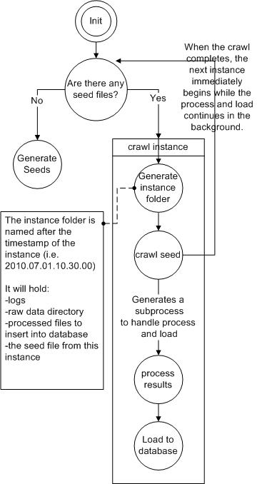
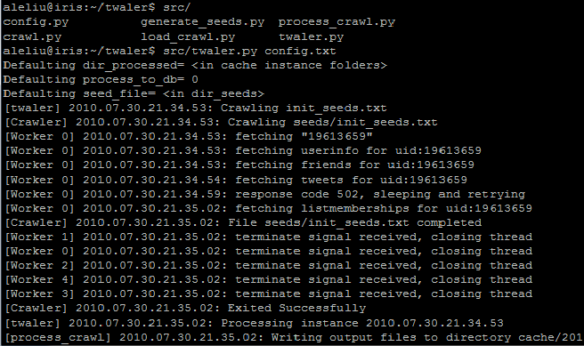

Twaler
A set of tools to crawl data from Twitter using the Twitter API.
Table Of Contents
Description
The generalized workflow is as follows (graph shown below):
crawl.py goes through a list of seeds (user_id or list_ids) and downloads the XML files through the REST API
process_crawl.py processes the XML files downloaded and formats them into tsv files for easy of inserting into the database
load_crawl.py loads all the tsv files into the twaler MySQL database
generate_seeds.py goes through the database and determines the next set of seeds to crawl

The process ran on snorg.cs.ucla.edu is slightly more complex to deal with problems with scale. See Twaler Process
Files
There are the following files in the twaler src directory:
crawl.py
- Description: goes through the list of seeds in the seed file, downloading info for each id
Usage: ./crawl.py <parameters> <config_file>
- We can manually specify parameters e.g) ./crawl.py --dir_log=log config.txt
- Config file contains the parameters listed below, exactly in the: key= value format
- Parameters:
- seed-file = seedfile.txt
- dir_log= logs
- folder to write logs to
- dir_cache= cache
- disk location of crawl results
- twitter_user= snorguser
- username for authentication required crawls
- twitter_password= snorg321
- password for authentication required crawls
- crawl_numOfThreads= 10
- number of threads used for downloading
- Parameters:
- Current Data Crawled
- User info
- Tweets
- Friends
- List Memberships
- Lists (*requires specification in seed file)
- Seedfile Format:
- Basic Usage: seed_file contains a list of user_ids
- e.g.) 1234567
- 7654321 …
- The crawler will crawl everything available for the user
- e.g.) 1234567
- Advanced Usage: for specific crawls
- Crawling Users:
<crawl_targets>\{tab}<user_id> <optional:last_cursor>
- crawl targets:
- t: tweets
- f: friends
- m: list memberships
- Examples:
tf\{tab}123456 => crawls the tweets and friends of 123456
*\{tab}123456 987654321 => crawls the tweets, friends, list memberships of the user_id, the argument is the “last_cursor”. By specifying the last tweet id crawled from this user, we can avoid re-downloading tweets that we have seen before
- Crawling Lists: crawling lists are a trickier special case, we need the user_id of the owner and the list_id
l\{tab}<user_id> <list_id>
- Example:
l\{tab}1234567 45678 =>crawls list 45678 from user 1234567
- *this is getting simplified soon
- Crawling Users:
- Basic Usage: seed_file contains a list of user_ids
Cache Folder Format: See cache_accessor.py
process_crawl.py
- Description: parses the raw xml files from the dir_cache specified and produces tsv files for each table
Usage: ./process_crawl.py <parameters> <config_file>
- Parameters:
instance= <defaults to current time>
- timestamp that represents the crawl instance
- dir_log= log
- disk directory location to write logs to
- dir_cache= cache
- disk directory location of crawl results
- dir_processed= processed_crawl
- directory to write processed tsv files to (if process_to_db=1, then this will not be created)
- process_to_db= 0
- directly insert into MySQL DB (slow, must provide db info)
- db_server= localhost
- server for processing crawl results to MySQL DB (if process_to_db=1)
- db_database= twaler
- database for processing crawl results to MySQL DB (if process_to_db=1)
- db_username= snorgadmin
- MySQL DB username (if process_to_db=1)
- db_password= snorg321
- MySQL DB password (if process_to_db=1)
- process_userinfo= 0
- process_friends= 0
- process_memberships= 0
- process_tweets= 0
- process_listmembers= 0
- extract_mentions= 0
- extract_urls= 0
- extract_hash= 0
- Parameters:
- tsv files are created exactly according to the twaler schema
load_crawl.py
- Description:
Usage: ./load_crawl.py [manual parameters] <config file>\n
- Parameters
- dir_log= log
- disk location to write logs to
- dir_processed= data
- directory where processed tsv are
- db_server= localhost
- server for processing crawl results to MySQL DB
- db_database= twaler
- database for processing crawl results to MySQL DB
- db_username= snorgadmin
- MySQL DB username
- db_password= snorg321
- MySQL DB password
- dir_log= log
- Parameters
config.py
- A header that contains the following helper functions:
logger: a class that specifies the format and output stream to which to print the log to. All classes use this.
Timefunctions: a group of static functions simply used to convert various time formats between each other
Cache_accessor: a wrapper that manages the way crawled data are stored onto disk. During each crawl instance, we may go through up to 20,000 users and generate a larger number of files (in zipped XML format). The cache_accessor organizes files by generating a directory for each user id. To avoid the case where a folder has 20,000 directory under it, the cache_accessor also generates intermediate directories by hashing the last three digits of each user id. For the caller function, the caller can simply call to either insert or obtain all the files of a particular user id. The cache_accessor also allows the caller to iterate through all the users under a specific directory.
- Example:
User 1234567 is stored in the cache directory under: cache/7/6/5/1234567
- Example:
Mysql_db: a wrapper that allows the user to perform MySQL inserts/lookups to a specified MySQL databased and table.
File_db: a wrapper that allows the user to perform inserts to a file using the same interface of Mysql_db. This is created primarily to provide an alternative to using the default MySQL database as the storage system. This class is also used in process_crawl to generate tsv files to load to the MySQL database.
Parse_arguments: a function that parses both command-line arguments and arguments from the configuration file.
twaler.py
- Twaler executes the entire process, runs each component accordingly, and keeps the entire process synchronized. Twaler begins by detecting seed files under the specified directory. If a seed file exists, Twaler then generates a crawl instance, in which the seed file will be crawled, processed, and the results loaded into the database. This process continues until all the seed files in the seed directory have been crawled and processed. In this case, Twaler will call the generate seed component to generate new seeds and fill the seed directory, and restart the process all over again

Usage Example
How to start from scratch and start crawling Twitter data:
- Unzip twaler.tar
- The unzipped folder should contain the following:
config.txt: contains the recommended/default parameters to run Twaler. You may change this accordingly (read the documentation on parameters for each component for details)
scripts/: contains scripts for setting up your own MySQL database according to the Twaler schema
twaler_schema.sql: generates the schema according to the schema specified in Twaler DB
seeds/: seed files in this directory will be crawled. Contains an init_seed.txt with an initial single seed.
seedsdone/: once a seed file is completed, it will be sent here a.src/: Contains all of the python programs required to run the system.
To run: under the unzipped directory, type: python src/twaler.py config.txt. This initiates the crawl using the initial seed under the seeds.
- Once the crawl begins, the screen should display information as shown below to inform you of the status of the crawl.

the item inside the brackets ie)[Crawler], [process_crawl]] indicate the process of the crawl.
[Worker #] indicates each thread from the crawler
- Some new folders are created as the crawl progresses:
cache/:
date-instances/: each crawl instance is defined by the time when the crawl begins ie)2010.08.01.00.00.00
0/,1/,2/...9/: these are folders that contain the raw Twitter data from this particular crawl
log/: this folder contains the logs for this particular crawl
processed_crawl/: contains the processed tsv files from the raw data
seed_file.txt: the seed used in this particular crawl
log/: logs from the twaler process
- The Twaler database is also populated in each instance